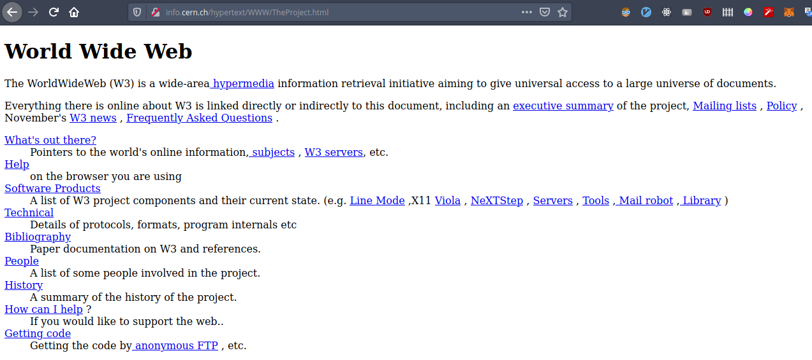

Une brève histoire des sites web
"Avant, il était difficile d'expliquer ce que le Web deviendrait, aujourd'hui, c'est difficle d'expliquer pourquoi c'était difficile."[1]- Tim Berners-Lee
C'est ce que nous allons essayer de faire dans ce chapitre, nous commencerons par une chronologie simple mais représentative de l'évolution des sites web, puis nous enchainerons sur l'impact que cette évolution a pu avoir sur les pratiques de développement et du côté des utilisateurs.
Cette chronologie présente les technologies qui ont permis et permettent encore aujourd'hui de faire des sites web. Il ne s'agit pas d'une liste exhaustive mais simplement des technologies qui ont pour objectif de présenter de l'information à des utilisateurs au travers d'un site web. Autrement dit, cette chronologie n'inclut pas les technologies telles que les protocoles HTTP ou l'Internet en général. Ces dernières permettent de faire circuler les fichiers web qui eux sont créés à partir des technologies suivantes.
Chronologie
1991 - HTML
C'est un langage de balisage fait pour créer des pages web[2]. Dans sa première version, il contient tout ce qu'il faut pour écrire du texte et le structurer sémantiquement. C'est un bon exemple d'outil mélant le formalisme des "humains", c'est-à-dire la possibilité d'écrire en langage naturel (Français, Anglais, ...) et formalisme logique via des balises, compréhensible par un programme informatique. Ainsi, lorsque le HTML est combiné avec d'autres technologie du Web de son époque, il permet de présenter le texte souhaité sur un navigateur comprenant lesdites balises.
La première page web contient les informations sur le HTML et tout l'écosystème du Web de l'époque (HTTP, le serveur web qui hébergeait la page, ...). Elle est disponible à cette adresse : http://info.cern.ch/hypertext/WWW/TheProject.html.
Première page web de l'Histoire.
Aujourd'hui, dans notre conception low-tech, l'utilisation de HTML n'est pas débattable tant cette technologie est importante et se trouve dans tous les standards du Web. Au contraire, dans notre approche low-tech, nous aurons très envie de remettre le HTML au centre de notre développement. En effet, le HTML contient déjà tout ce qu'il faut pour présenter/partager de l'information ; ce ne serait pas absurde de dire que tous les sites web qui ne font que présenter de l'information peuvent exister sans avoir besoin des prochaines technologies de cette chronologie.
1994 - PHP
L'histoire des sites web incluent aussi les technologies qui permettent de générer du HTML. Le PHP en est un bon exemple ; il s'agit d'un langage pour écrire des programmes qui seront exécutés sur un serveur web. Sans rentrer dans les détails, pour servir une page web, il faut qu'un serveur puisse envoyer les fichiers correspondants à ladite page (du HTML par exemple). Un programme PHP permet par exemple de générer "à la volée" ces fichiers là.
Les générations "côté serveur" de page web ont été très importante dans l'évolution des sites web puisqu'elles ont permis, avec les bases de données, de personnaliser les pages servies en fonction de la personne à qui elles sont servies et d'autres paramètres comme l'adresse du site. On imagine bien que Wikipédia (écrit en PHP) n'héberge pas, dans ses serveurs, un fichier HTML par article (et par langue) mais que les pages sont générées à la demande d'un utilisateur. Même chose pour Facebook.
1995 - Les tableaux
Le HTML a connu une grande évolution après sa première publication. De nombreuse améliorations ont été proposées et intégrées dans une nouvelle version sortie en 1995 : HTML 2.0.[2]
Parmis ces améliorations, on retrouve les tableaux qui permettent de
commencer à styliser ses pages web. Par exemple, un développeur pouvait
utiliser la balise table pour donner à sa page web un look
de journal. Cette version a aussi accueili les images et expressions
mathématiques.
Nous incluons les tableaux dans notre chronologie car cette amélioration représente un tournant, celui d'essayer de rendre ses pages web jolie et plus intuitive pour les utilisateurs.

Exemple de page web avec tableaux.
En surfant sur le Web durant ces temps là, on peut commencer à voir des pages web qui suivent le "block design". C'est-à-dire des pages web donc les sections sont séparées en bloc grâce à des tables.
Parmis les contributions majeures, il y a aussi les formulaires du navigateur NCSA Mosaic[2] qui permettent à la page web d'interagir avec d'autres programmes informatique. C'est une avancée majeure en ce qui concerne l'interactivité du Web. On peut commencer à avoir de véritables applications servies sur le Web et plus uniquement des informations à partager.
1995 - JavaScript
JavaScript conclue l'année 1995 en beauté. Les développeurs peuvent désormais intégrer de la logique dans leurs pages web.
Les utilisateurs peuvent maintenant intéragir avec les pages qu'ils consultent : cliquer sur des boutons qui ont chacun un comportement spécifique, jouer à des jeux vidéos, etc... Du côté des développeurs, le JavaScript change aussi beaucoup de choses, ils peuvent désormais : valider ce que l'utiliateur tape dans un formulaire, transmettre des informations sur le comportement de l'utilisateur, modifier dynamiquement le site web pour afficher des publicités, etc...

Exemple de JavaScript.
1996 - Flash
Flash offre la possibilité de manipuler des graphiques vectoriels et tout type de contenu multimédia destiné à être publier sur le Web grâce à Flash Player. Les pages web peuvent maintenant intégrer du contenu multimédia bien plus riche qu'auparavant, en particulier des animations, des publicités et des jeux vidéos.
C'est une autre technologie qui contribue à l'enrichissement des sites web.
1998 - CSS
Donnons du style à nos pages web !
L'ajout des feuilles de styles, bien qu'elles aient mis du temps à être bien intégrées aux navigateurs, montre l'envie de vouloir séparer la forme du fond.
La stack du développement web devient :
- HTML -> Structure
- CSS -> Présentation
- JS -> Comportement
Les feuilles de styles permettent de styliser n'importe laquelle des balises HTML présente dans une page web (titre, paragraphres, images, listes, formulaires, etc...).
La page web que vous lisez actuellement est un exemple de HTML augmenté par du CSS.
2007 - Mobile
Jusqu'à présent, tous les sites web avaient plus ou moins le même style car les écrans sur lesquelles ils étaient affichés avaient tous, plus ou moins, les mêmes proportions/résolutions. Cela a changé avec l'apparition du premier smartphone en 2007.
Il est désormais possible de lire une page web depuis un écran bien plus petit et disposant d'une résolution bien différente, avec des proportions inversées (on passe de vue en paysage à portrait).
La première solution a été de développer plusieurs sites web.
Généralement un pour l'ordinateur de bureau/portable, et un second pour
le mobile. Il n'était pas rare que des sites web proposent une adresse
mobile.site.com en parallèle de www.site.com.
2010 - Design Responsive
C'est en 2010 que l'on réfléchit à l'idée de n'avoir qu'un seul site web capable de rendre une page aussi belle sur ordinateur que sur mobile. Le changement a été fait dans CSS avec la possibilité de préciser pour quelle résolution un style doit s'appliquer.
On note que, désormais, toutes les pages web responsive intègrent le CSS de toutes les résolutions, contrairement à la solution précédente qui permettait de charger uniquement les fichiers dont on avait besoin en fonction de l'URL.
Toutes ces nouveautés en CSS contribuent à l'apparition de framework CSS sous la forme de fichiers contenant un grand nombre de composants CSS pré-conçus. Un exemple serait Bootstrap de Twitter permettant à tous les développeurs d'adopter facilement le style de Twitter sur leurs sites web. Ces framework demandent bien entendu de devoir les charger à chaque visite.
2014 - NPM
Le Node Package Registry est un hub de librairies et frameworks JavaScript. Il a permis la livraison d'un grand nombre de framework JavaScript utilisés pour créer des sites web dont le rendu est côté client. Cela signifie que le HTML reçu par le client est très minimal mais par contre il reçoit de gros fichier JavaScript que le navigateur va interpréter pour générer le HTML sur l'ordinateur du client ; c'est à comparer avec le rendu côté serveur comme ce que fait le PHP. Aujourd'hui, la tendance est clairement aux framework JavaScript côté client comme le montre ces résultats Google Trends[3].


Ces figures présentent les résultats de recherches de React.js et Vue.js, des frameworks JavaScript côté client.
Aujourd'hui
Toutes ces évolutions sont intéressantes, aussi bien pour les développeurs que pour les utilisateurs, mais viennent à un prix. Ce ne sont plus les quelques Ko de HTML qui transitent désormais dans les canaux d'Internet mais bien des Mo de frameworks CSS/JS par page[4]. Cela ne semble pas beaucoup mais ces chiffres sont le résultat de l'évolution d'une industrie tout entière et reflète l'impact de cette évolution au travers des développeurs et utilisateurs.
L'impact sur le développement
Le nombre de technologies que l’ont peut utiliser lors de la réalisation d’un site web à considérablement augmenté. Cela apporte de nombreuses solutions lors du développement web. Mais il est clair que cela va avoir un impact métier. Notamment ça à conduit à la division des métiers liée au développement d’un site. Ainsi aujourd’hui il est courant de séparer développeur front-end et back-end. Le front-end se consacre à l’UI (interface utilisateur) tandis que le back-end se consacre au développement fonctionnel de la base de données et des programme côté serveur. Un troisième profile full-stack émerge, un développeur qui maitrise l’ensemble des stacks technique en tant que membre.
Mais malgré cela il est maintenant nécessaire de maitriser de nombreuses technologies pour chaque type de développeur web. Ainsi Les compétences du développeur front-end sont, au minimum : HTML, CSS et Javascript mais il peut aussi se reposer sur les frameworks tel que jQuery, Angular, Bootstrap et bien d’autre. De la même façon un développeur back-end va devoir maitriser les langages : PHP, Ruby, Python, SQL et pourra connaitre de nombreux framework comme Symfony etc.
Aussi il est maintenant nécessaire de s’assurer de la compatibilité et de la communication entre ces technologies. Par exemple il peut être important de voir si un site web s’affiche de la même manière sur tous les navigateurs. Ce problème de compatibilité du CSS tend à se résoudre avec l’amélioration de ces derniers, mais même si ces problèmes concernent des supports anciens cela constitue un très bon exemple de problème de compatibilité. Un support simple entraine plus de robustesse dans le temps et il peut être souhaitable pour certains documents d’être plus durable.
Cela entraine aussi un problème général : celui de la dépendance aux technologies. Plus les systèmes sont complexes et repose sur de nombreux éléments plus on est dépendant de l’écosystème. Ainsi une technologie non libre de droits qui change ces règles d’utilisations peut entrainer l’incapacité de maintenir un site.
L'impact sur les utilisateurs
Sources
Pour aller plus loin...
| ID | Objet | Lien |
|---|---|---|
| [1] | Citation Tim Berners-Lee | https://www.youtube.com/watch?v=k0gvAyCubGQ |
| [2] | Détails sur le HTML | https://fr.wikipedia.org/wiki/Hypertext_Markup_Language |
| [3] | Google Trends | https://trends.google.fr |
| [4] | Taille des pages web | https://httparchive.org/reports/page-weight |